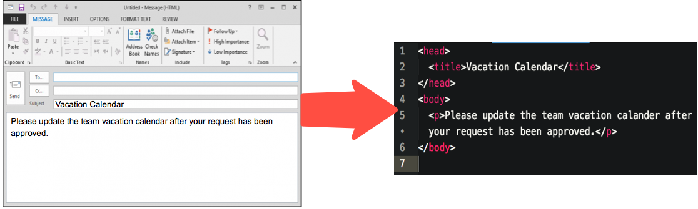

Give them opportunties to figure things out themselves by providing guided self-discovery lessons.

<!DOCTYPE html>
<html>
<head>
<meta charset="utf-8">
<title></title>
</head>
<body>
<h1>Hello World!</h1>
</body>
</html>
Press the space bar to navigate forward
The goal of this course is to teach students, with little to no knowledge of web development, how to create a basic web page using HTML.
Students should be able to...
recall the history of HTML
explain how an HTML document is structured
build a simple web site using tags learned in this course
Since the target audience has little to no experience using HTML, we can expect a gap in knowledge and in skills.
Make the content relatable to something they already know.
Give them opportunties to figure things out themselves by providing guided self-discovery lessons.
Develop group activities so students can collaborate and learn from each other.

In this activity, students have yet to learn about the <image> tag
Challenge: Copy the URL from an image of your choosing and try to figure out how to make it show up on your web page.
Challenge: Work together to create a web site of your choosing. Make sure the site meets the following requirements.
Your website should have:
Some students may not feel comfortable volunteering to answer a question. Why not use a poll?